t_coneMosaicHex3
Generates a rectangular and a hexagonal mosaic and visualizes isomerization maps of the two mosaics for three different scenes.
NPC ISETBIO Team, Copyright 2016
Contents
- Initialize
- Unit test 1: Generate two mosaics, a rectangular one and a hexagonal one.
- Unit test 2: use the superclass (coneMosaic) plotting routine to visualize the two mosaics
- Unit test 3: compare isomerizations between rect and hex mosaics for the ring rays scene
- Unit test 4: compare isomerizations between rect and hex mosaics for the Vernier scene
- Unit test 5: compare isomerizations between rect and hex mosaics for the slanted bar scene
Initialize
ieInit; clear; close all; % Interactive mode. Set to true to have it pause at useful places. % Default is false so we can autopublish without user input interactiveMode = false; % Freeze random number generator rng('default'); rng(219347); mosaicParams = struct(... 'resamplingFactor', 5, ... % controls the accuracy of the hex mosaic grid 'spatiallyVaryingConeDensity', false, ... % whether to have an eccentricity based, spatially - varying density 'centerInMM', [0.0 0.0], ... % mosaic eccentricity 'size', [64 64], ... % generate from a rectangular mosaic of 64 x 64 cones 'spatialDensity', [0 0.62 0.31 0.07],... % with a LMS density of of 0.62:0.31:0.07 'noiseFlag', 'none' ... );
Unit test 1: Generate two mosaics, a rectangular one and a hexagonal one.
The hex mosaic is derived from the rectangular mosaic instantiated below
theRectMosaic = coneMosaic( ... 'name', 'the rect mosaic', ... 'size', mosaicParams.size, ... 'spatialDensity', mosaicParams.spatialDensity, ... 'noiseFlag', mosaicParams.noiseFlag ... ); % Generate a hex mosaic using the pattern of the rectangular mosaic customLambda = []; theHexMosaic = coneMosaicHex(... mosaicParams.resamplingFactor, ... mosaicParams.spatiallyVaryingConeDensity, ... customLambda, ... 'size', mosaicParams.size, ... 'pattern', theRectMosaic.pattern, ... 'spatialDensity', mosaicParams.spatialDensity, ... 'noiseFlag', mosaicParams.noiseFlag, ... 'name', 'the hex mosaic' ... ); theHexMosaic.displayInfo();
Resampling grid. Please wait ... Done !
Mosaic info:
Size (microns): 128.0 (w) x 128.0 (h)
FOV (deg): 0.43 (w) x 0.43 (h)
Grid resampling factor: 5
Cone geometric aperture (diameter in microns): 2.00 (w) x 2.00 (h)
Cone light colleting aperture (diameter in microns): 1.40 (w) x 1.40 (h)
Cone geometric area (microns^2): 4.000
Cone light colleting area (microns^2): 1.960
Rectangular grid: 64 cols x 64 rows
Resampled grid: 320 cols x 320 rows
Total cones: 102400
Active cones: 4071
Cone density (all cones): 6250000.0 cones/mm^2
Cone density (active cones): 248474.1 cones/mm^2
Unit test 2: use the superclass (coneMosaic) plotting routine to visualize the two mosaics
if (interactiveMode) commandwindow fprintf('\n<strong>Hit enter to display the two mosaics using the superclass plotting routines. </strong>'); pause end hFig1 = figure(1); set(hFig1, 'Position', [10 100 400 400], 'Name', 'Rect mosaic'); hFig2 = figure(2); set(hFig2, 'Position', [500 100 400 400], 'Name', 'Hex mosaic'); theRectMosaic.plot('cone mosaic', 'hf', hFig1); theHexMosaic.plot('cone mosaic', 'hf', hFig2);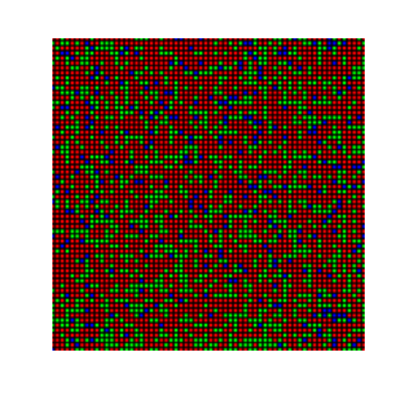 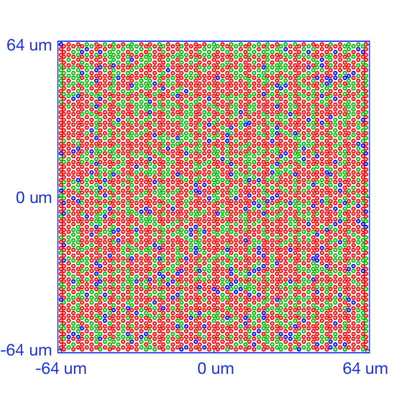
Unit test 3: compare isomerizations between rect and hex mosaics for the ring rays scene
if (interactiveMode) commandwindow fprintf('\n<strong>Hit enter to compare isomerizations between the rect and hex mosaics for the ring rays scene. </strong>'); pause end % Generate ring rays stimulus scene = sceneCreate('rings rays'); scene = sceneSet(scene,'fov', 1.0); vcAddObject(scene); sceneWindow % Compute the optical image oi = oiCreate; oi = oiCompute(scene,oi); % Compute isomerizations for both mosaics isomerizationsRect = theRectMosaic.compute(oi,'currentFlag',false); isomerizationsHex = theHexMosaic.compute(oi,'currentFlag',false); nonNullConeIndices = theHexMosaic.pattern > 1; allIsomerizations = [isomerizationsRect(:); isomerizationsHex(nonNullConeIndices)]; isomerizationsRange = prctile(allIsomerizations, [5 95]); % Render activation images for the hex mosaic [activationsHexImage, activationsLMSHexImage] = theHexMosaic.computeActivationDensityMap(isomerizationsHex); % Display results hFig = figure(100); clf; set(hFig, 'Position', [10 10 1200 440], 'Color', [1 1 1], 'MenuBar', 'None'); subplot('Position', [0.14 0.03 0.29 0.95]); imagesc(1:theHexMosaic.cols, 1:theHexMosaic.rows, activationsHexImage); set(gca, 'CLim', isomerizationsRange, 'XTick', [], 'YTick', []); axis 'image'; axis 'xy' title('hex mosaic isomerizations (all cones)', 'FontSize', 16); subplot('Position', [0.60 0.03 0.29 0.95]); imagesc(1:theRectMosaic.cols, 1:theRectMosaic.rows, isomerizationsRect); set(gca, 'CLim', isomerizationsRange, 'XTick', [], 'YTick', []); axis 'image'; axis 'xy' title('rect mosaic isomerizations (all cones)', 'FontSize', 16); colormap(gray(1024)); hFig = figure(101); clf; set(hFig, 'Position', [10 700 1200 440], 'Color', [1 1 1], 'MenuBar', 'None'); subplot('Position', [0.04 0.03 0.29 0.95]); imagesc(1:theHexMosaic.cols, 1:theHexMosaic.rows, squeeze(activationsLMSHexImage(:,:,1))); set(gca, 'CLim', isomerizationsRange, 'XTick', [], 'YTick', []); axis 'image'; axis 'xy' title('hex mosaic L-cone isomerizations', 'FontSize', 16); subplot('Position', [0.35 0.03 0.29 0.95]); imagesc(1:theHexMosaic.cols, 1:theHexMosaic.rows, squeeze(activationsLMSHexImage(:,:,2))); set(gca, 'CLim', isomerizationsRange, 'XTick', [], 'YTick', []); axis 'image'; axis 'xy' title('hex mosaic M-cone isomerizations', 'FontSize', 16); subplot('Position', [0.66 0.03 0.29 0.95]); imagesc(1:theHexMosaic.cols, 1:theHexMosaic.rows, squeeze(activationsLMSHexImage(:,:,3))); set(gca, 'CLim', isomerizationsRange, 'XTick', [], 'YTick', []); axis 'image'; axis 'xy' title('hex mosaic S-cone isomerizations', 'FontSize', 16); colormap(gray(1024));
 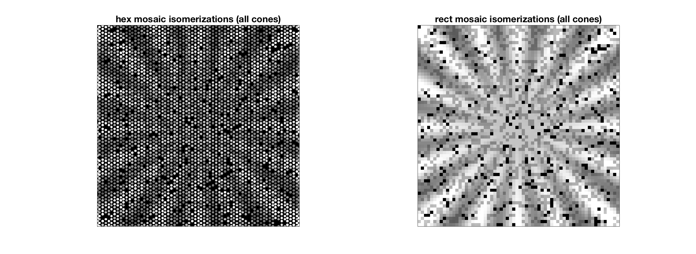 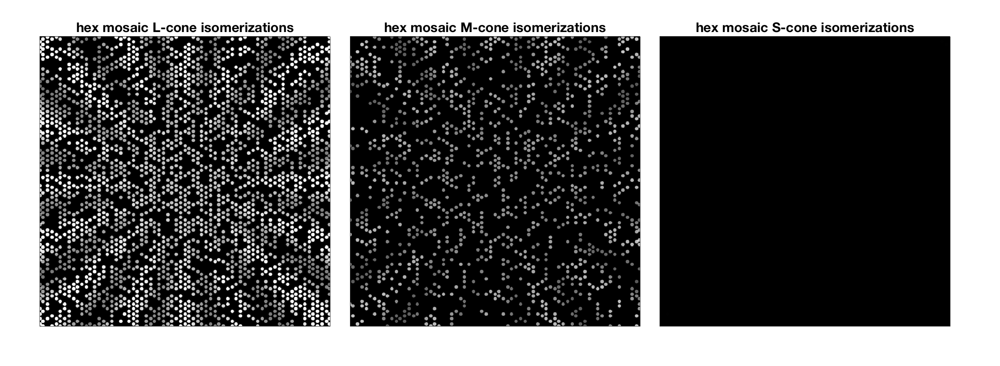
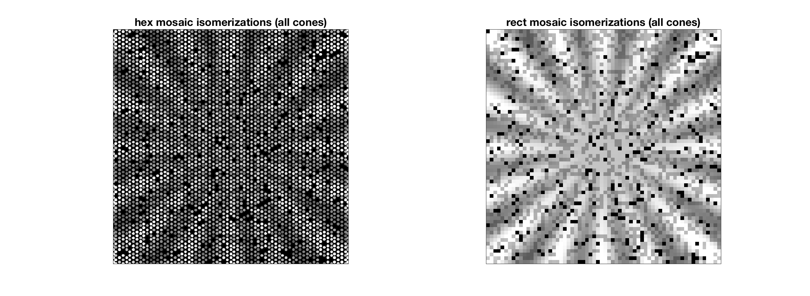 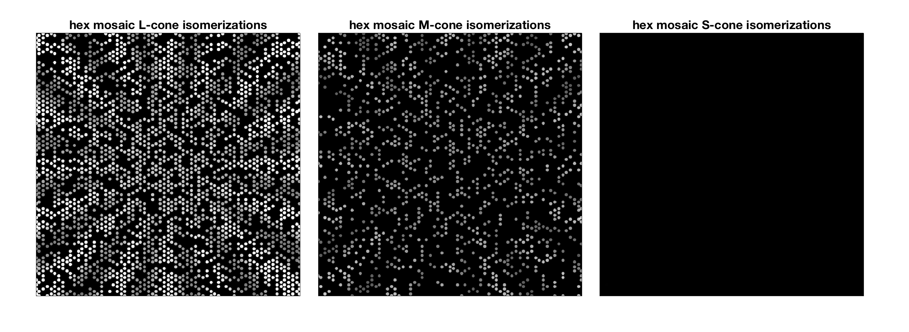 Unit test 4: compare isomerizations between rect and hex mosaics for the Vernier scene
if (interactiveMode) commandwindow fprintf('\n<strong>Hit enter to compare isomerizations between the rect and hex mosaics for the Vernier scene. </strong>'); pause end % Generate the vernier scene scene = sceneCreate('vernier'); scene.distance = 1; scene = sceneSet(scene,'fov', 1.0); vcAddObject(scene); sceneWindow % Compute the optical image oi = oiCompute(scene,oi); % Compute isomerizations for both mosaics isomerizationsRect = theRectMosaic.compute(oi,'currentFlag',false); isomerizationsHex = theHexMosaic.compute(oi,'currentFlag',false); allIsomerizations = [isomerizationsRect(:); isomerizationsHex(nonNullConeIndices)]; isomerizationsRange = prctile(allIsomerizations, [5 95]); % Render activation images for the hex mosaic [activationsHexImage, activationsLMSHexImage] = theHexMosaic.computeActivationDensityMap(isomerizationsHex); % Display results hFig = figure(100); clf; set(hFig, 'Position', [10 10 1200 440], 'Color', [1 1 1], 'MenuBar', 'None'); subplot('Position', [0.14 0.03 0.29 0.95]); imagesc(1:theHexMosaic.cols, 1:theHexMosaic.rows, activationsHexImage); set(gca, 'CLim', isomerizationsRange, 'XTick', [], 'YTick', []); axis 'image'; axis 'xy' title('hex mosaic isomerizations (all cones)', 'FontSize', 16); subplot('Position', [0.60 0.03 0.29 0.95]); imagesc(1:theRectMosaic.cols, 1:theRectMosaic.rows, isomerizationsRect); set(gca, 'CLim', isomerizationsRange, 'XTick', [], 'YTick', []); axis 'image'; axis 'xy' title('rect mosaic isomerizations (all cones)', 'FontSize', 16); colormap(gray(1024)); hFig = figure(101); clf; set(hFig, 'Position', [10 700 1200 440], 'Color', [1 1 1], 'MenuBar', 'None'); subplot('Position', [0.04 0.03 0.29 0.95]); imagesc(1:theHexMosaic.cols, 1:theHexMosaic.rows, squeeze(activationsLMSHexImage(:,:,1))); set(gca, 'CLim', isomerizationsRange, 'XTick', [], 'YTick', []); axis 'image'; axis 'xy' title('hex mosaic L-cone isomerizations', 'FontSize', 16); subplot('Position', [0.35 0.03 0.29 0.95]); imagesc(1:theHexMosaic.cols, 1:theHexMosaic.rows, squeeze(activationsLMSHexImage(:,:,2))); set(gca, 'CLim', isomerizationsRange, 'XTick', [], 'YTick', []); axis 'image'; axis 'xy' title('hex mosaic M-cone isomerizations', 'FontSize', 16); subplot('Position', [0.66 0.03 0.29 0.95]); imagesc(1:theHexMosaic.cols, 1:theHexMosaic.rows, squeeze(activationsLMSHexImage(:,:,3))); set(gca, 'CLim', isomerizationsRange, 'XTick', [], 'YTick', []); axis 'image'; axis 'xy' title('hex mosaic S-cone isomerizations', 'FontSize', 16); colormap(gray(1024));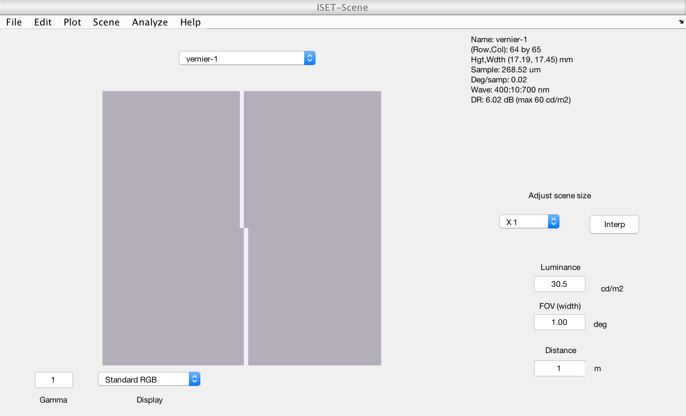 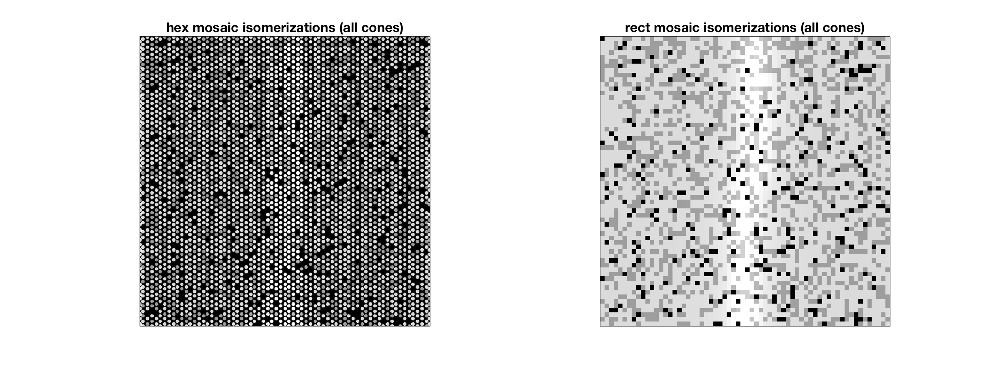 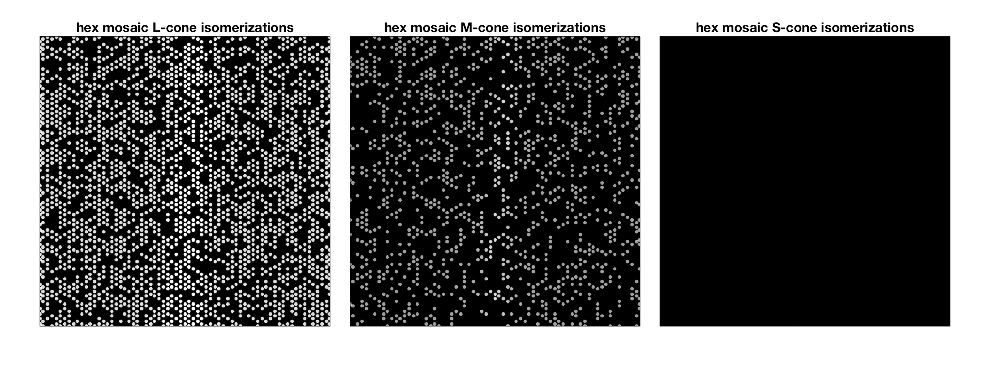
Unit test 5: compare isomerizations between rect and hex mosaics for the slanted bar scene
if (interactiveMode) commandwindow fprintf('\n<strong>Hit enter to compare isomerizations between the rect and hex mosaics for the slanted bar scene.</strong>\n\n'); pause end % Generate the slanted bar scene scene = sceneCreate('slanted bar'); scene = sceneSet(scene,'fov', 1.0); vcAddObject(scene); sceneWindow; % Compute the optical image oi = oiCompute(scene,oi); % Compute isomerizations for both mosaics isomerizationsRect = theRectMosaic.compute(oi,'currentFlag',false); isomerizationsHex = theHexMosaic.compute(oi,'currentFlag',false); allIsomerizations = [isomerizationsRect(:); isomerizationsHex(nonNullConeIndices)]; isomerizationsRange = prctile(allIsomerizations, [5 95]); % Render activation images for the hex mosaic [activationsHexImage, activationsLMSHexImage] = theHexMosaic.computeActivationDensityMap(isomerizationsHex); % Display results hFig = figure(100); clf; set(hFig, 'Position', [10 10 1200 440], 'Color', [1 1 1], 'MenuBar', 'None'); subplot('Position', [0.14 0.03 0.29 0.95]); imagesc(1:theHexMosaic.cols, 1:theHexMosaic.rows, activationsHexImage); set(gca, 'CLim', isomerizationsRange, 'XTick', [], 'YTick', []); axis 'image'; axis 'xy' title('hex mosaic isomerizations (all cones)', 'FontSize', 16); subplot('Position', [0.60 0.03 0.29 0.95]); imagesc(1:theRectMosaic.cols, 1:theRectMosaic.rows, isomerizationsRect); set(gca, 'CLim', isomerizationsRange, 'XTick', [], 'YTick', []); axis 'image'; axis 'xy' title('rect mosaic isomerizations (all cones)', 'FontSize', 16); colormap(gray(1024)); hFig = figure(101); clf; set(hFig, 'Position', [10 700 1200 440], 'Color', [1 1 1], 'MenuBar', 'None'); subplot('Position', [0.04 0.03 0.29 0.95]); imagesc(1:theHexMosaic.cols, 1:theHexMosaic.rows, squeeze(activationsLMSHexImage(:,:,1))); set(gca, 'CLim', isomerizationsRange, 'XTick', [], 'YTick', []); axis 'image'; axis 'xy' title('hex mosaic L-cone isomerizations', 'FontSize', 16); subplot('Position', [0.35 0.03 0.29 0.95]); imagesc(1:theHexMosaic.cols, 1:theHexMosaic.rows, squeeze(activationsLMSHexImage(:,:,2))); set(gca, 'CLim', isomerizationsRange, 'XTick', [], 'YTick', []); axis 'image'; axis 'xy' title('hex mosaic M-cone isomerizations', 'FontSize', 16); subplot('Position', [0.66 0.03 0.29 0.95]); imagesc(1:theHexMosaic.cols, 1:theHexMosaic.rows, squeeze(activationsLMSHexImage(:,:,3))); set(gca, 'CLim', isomerizationsRange, 'XTick', [], 'YTick', []); axis 'image'; axis 'xy' title('hex mosaic S-cone isomerizations', 'FontSize', 16); colormap(gray(1024));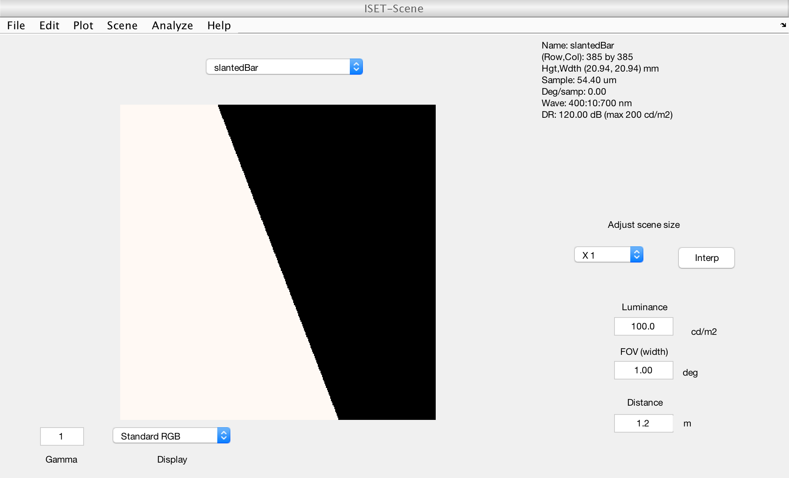 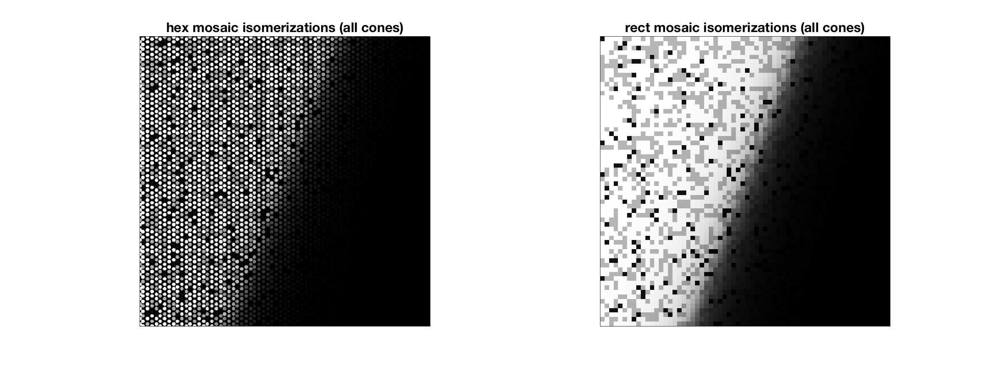 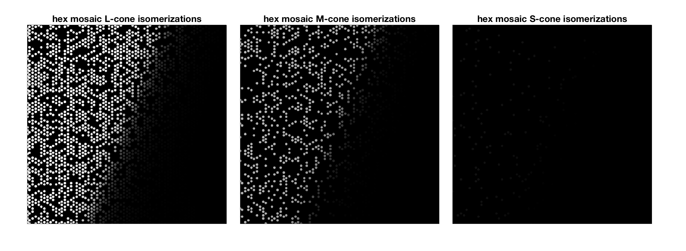